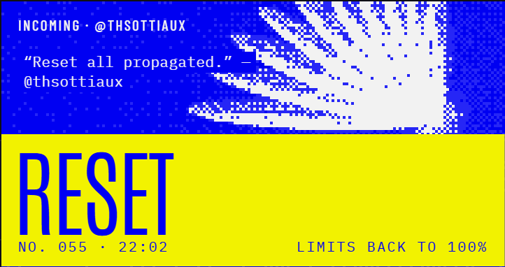

Hermes Desktop plugin
Codex
Resets
Know the moment OpenAI resets your Codex limits. It lives in the status bar and stays quiet until it counts.
Data from codex-resets.com

opus · main
Reset · fresh limits